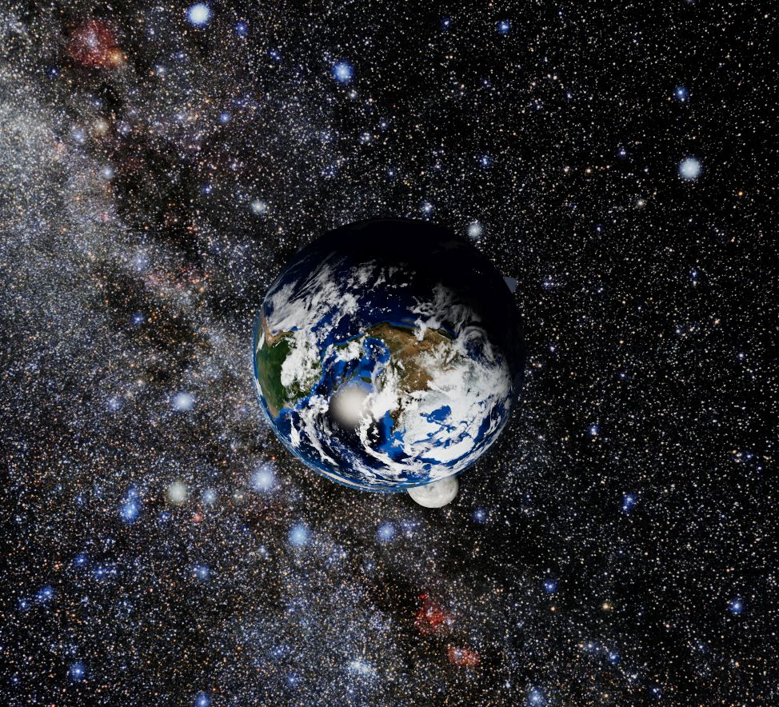
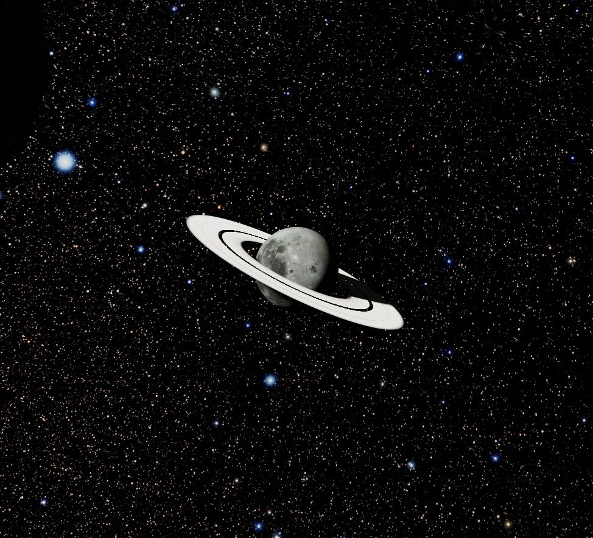
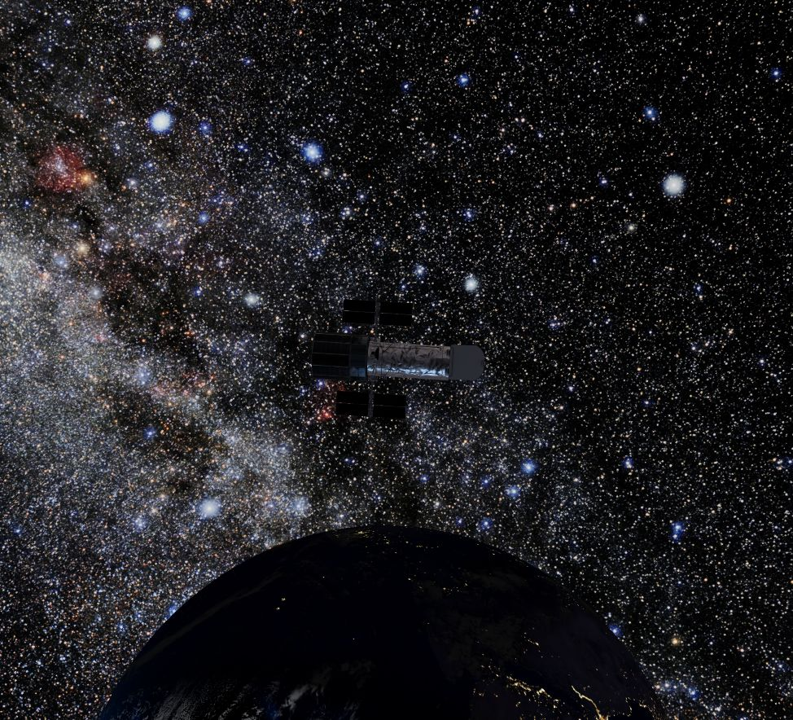
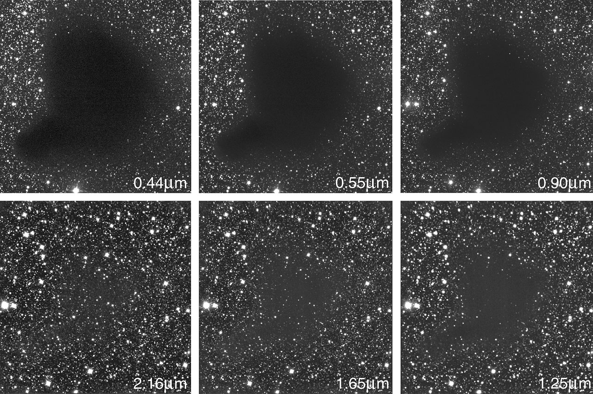
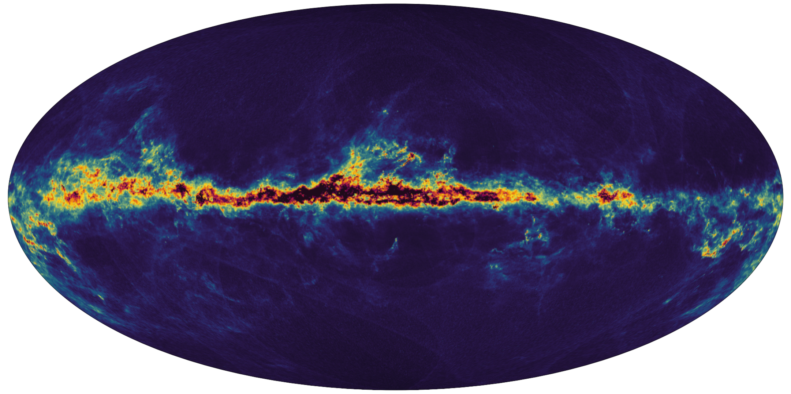

PLansi_xi — first visit
1. Open the system
For an online visit, open o0space0o.app and allow the high-resolution textures to load. The controls below apply to the live preview too. To play your own songs from Audio/, use the local version:
Download or clone the complete PLansi_xi repository. On Windows, double-click Start PLansi_xi.cmd. Keep the terminal open and allow the high-resolution textures to load. The website opens at http://127.0.0.1:4173 with the whole system in view. No visible panels or labels appear.
On macOS/Linux, install Node.js 24 or newer and run node scripts/serve.mjs. Guide.html opens offline if you want to read instructions before starting.
2. Visit Earth
Press 1, or left-click Earth. The camera takes a continuous route toward it, then follows its orbit. Left-drag to inspect the surface from another angle. You can keep rotating through complete turns in any direction.

Right-click to fly back. The number keys provide easy first-visit shortcuts when a moon or Hubble looks small in the overview: 2 Luna, 3 Kepler X, 4 Aurelia, 5 Hubble.
3. Change only the motion you point at
Point at Earth's visible surface and scroll up. Earth's orbit, surface rotation, and clouds accelerate. The other clocks stay unchanged. Scroll down repeatedly to slow or pause Earth; scroll up to resume.
Now point at empty sky and scroll. This changes the speed of the photographic background shimmer independently. T switches it off/on. Pausing a moon stops its orbit around its parent, while its parent can still carry it through the system. Reload the page whenever you want all speeds reset to 1×.
The wheel controls animation rather than zoom. Camera flight duration stays constant. The complete controls reference explains target selection and the 80× speed limit.
4. Inspect the ringed moon
Press 4 to visit Aurelia. Its rings have visible bands, gaps, and shadows on the moon. Scrolling over either the moon or its rings changes Aurelia's motion. It is an imagined moon, using lunar terrain as artwork.

5. Listen from Hubble
Press 5 to visit NASA's Hubble model. Press the middle wheel button once (or M) to enter hidden music mode. Short-left-click to play. Scroll to change volume. Short-right-click to stop and rewind.

Hold left for 650 ms to select the next song; hold right to select the previous song. Middle-click again to leave the mode. Playback continues and the normal camera controls return. The camera is the listener, so the direction of Hubble and intervening worlds affect the cinematic radio sound. Try headphones.
The GitHub download has no songs. Put your own files directly in Audio/ and re-enter music mode to discover them. A file named Words before sleep is prioritized when present; other supported filenames follow in order. Songs are ignored by Git and stay local. Full music-player instructions include keyboard alternatives, formats, and troubleshooting.
6. Keep the best image
Highest available graphics are selected by default. The real sky panorama is 16K, cloud/night maps are 8K, and rendering uses native display density with multisample antialiasing. Quality does not decrease automatically when frame rate drops.
For a smaller computer, deliberately select http://127.0.0.1:4173/?quality=8k. This reduces sky/cloud/night asset sizes. Enable browser hardware acceleration if you see a black screen. The photographic sky has no invented star particles; stars and dust explains the optional observing effect and the limits of the visual simulation.
Press H for the guide, Escape or right-click for the system, and Ctrl+C in the terminal when finished. When sharing the project, keep the complete repository folder together.
Using PLansi_xi
Start and stop
Keep the complete downloaded/cloned repository together. On Windows 10/11 x64 or ARM64, double-click Start PLansi_xi.cmd. It chooses the included official Node.js runtime, starts a loopback-only server, and opens your browser. Keep the terminal open. If necessary, visit http://127.0.0.1:4173 yourself. Close the terminal or press Ctrl+C there to stop.
On macOS/Linux, install Node.js 24 or newer, run node scripts/serve.mjs, and open the printed address. The checked-in browser modules and prepared assets need no build. For development, use npm ci to install the pinned tooling and regenerate the vendor bundle.
Follow the illustrated tutorial for a first visit. Guide.html contains the documentation offline. Press H in the scene to open the online local guide.
Explore without a visible interface
| Input | Action |
|---|---|
| Left-click a planet, moon, or Hubble | Smooth flight to it, then follow its orbit |
| Right-click | Smooth return to the entire system |
| Left-drag | Rotate freely, through unlimited complete turns |
| Wheel up / down over a body | Accelerate / slow its own orbit and spin |
| Wheel up / down over empty sky | Accelerate / slow the background shimmer |
| 1 / 2 / 3 / 4 / 5 | Select Earth / Luna / Kepler X / Aurelia / Hubble |
| Escape | Return to the system overview |
| T | Switch photographic shimmer / steady space view |
| H | Open instructions in a separate tab |
| Middle button or M | Enter or exit hidden music mode |
Point to control time
Place the pointer over the visible object you want to change, then scroll. Each planet, moon, and Hubble has its own clock. A planet's cloud rotation follows its clock too. The background has a separate shimmer clock; point away from the objects to change it. Rings belong to Aurelia, so scrolling over a ring changes Aurelia's clock.
Every clock starts at 1×, with body motion based on 0.05 simulated days per real second. Scroll up to accelerate, down to slow, and far enough down to pause that target. Scroll up again to resume. The maximum is 80×. An Earth speed change does not change Luna or Hubble's orbit around Earth, although they still follow Earth's position. Likewise, a paused moon stays attached to its moving parent.
Camera journeys keep their normal duration, and music keeps its original playback speed. Inside music mode, the wheel controls volume instead. Exit music mode to select worlds and rotate again. Music-player guide.
The wider approach leaves space around each world. Trackball rotation can roll the view upside down when crossing a pole. Reloading restores the overview, every speed to 1×, and shimmer enabled. No labels, orbit lines, or control panels appear.
Graphics and background
Highest detail is the default: a 16384 × 8192 NOIRLab all-sky photograph, prepared from its 40000 × 20000 original, plus 8K cloud/night maps. Native display resolution and GPU-supported multisample antialiasing stay enabled; frame rate does not silently reduce quality. Smaller GPU texture limits select the compatible 8K sky. On a smaller computer, explicitly use http://127.0.0.1:4173/?quality=8k for an 8K sky and 4K cloud/night maps.
No extra star objects are rendered. The default subtle atmospheric shimmer changes light already photographed. Press T to use the steady photo expected from space. The science reference explains dust and twinkling using real observations. There is no texture-wide animation noise, blur, or moving dust wash.
Earth and Luna use NASA imagery; Hubble uses NASA's textured model. Kepler X and Aurelia are fictional. Sizes and orbits are arranged for viewing rather than a measured astronomical system or N-body calculation. Full asset credits.
Common issues
| Symptom | What to do |
|---|---|
| Launcher cannot find its runtime | Keep runtime, dist, Audio, and scripts beside the launcher; download the complete repository |
| Blank or black scene | Enable browser hardware acceleration and reload; read any error shown |
| Page does not open | Keep the terminal open and enter the printed local address |
| Slow loading or low memory | Select ?quality=8k; close other graphics-heavy tabs |
| Wheel changes volume / camera does not react | Press M or middle-click to leave music mode |
| Wrong object changes speed | Place the pointer directly over its visible surface, or its rings for Aurelia |
| Music is quiet or muffled | Check volume and move to a clear line of sight to Hubble |
| A song does not play | Follow music troubleshooting |
If port 4173 is occupied, run node scripts/serve.mjs --port 4174 using installed Node or the bundled architecture-specific executable, then use the new printed address. On Windows add --open to open the browser automatically.
Hidden music player
Music comes from the Hubble satellite orbiting Earth. Headphones make its direction easier to hear. The music mode has no visible menu, keeping the scene clear.
Play your first song
- Launch PLansi_xi and let the scene finish loading.
- Press the middle mouse button (click the wheel), or press M.
- Put a supported song in Audio/ if this is a new repository download.
- Short left-click to play the first available song.
- Roll the wheel up or down to adjust volume.
- Middle-click again, or press M, to leave music mode. Playback continues while you explore.
To stop, enter music mode again and short right-click. This stops playback, rewinds the song, and silences the reverb/echo output.
Controls inside music mode
| Mouse | Action | Keyboard alternative |
|---|---|---|
| Short left click | Play the current song | Space toggles play/stop |
| Short right click | Stop and rewind | Space toggles play/stop |
| Hold left for at least 650 ms | Next song | Right arrow |
| Hold right for at least 650 ms | Previous song | Left arrow |
| Wheel up / down | Increase / decrease volume | Up / down arrow, 5% steps |
| Middle click | Exit music mode; keep playback running | M or Escape |
Each hold changes a track once. Releasing it does not also play/stop or select a planet. Switching songs keeps playing if playback was active; if stopped, it selects the track ready for your next play click. The playlist wraps at either end and advances when a song finishes. Volume starts at 60% and is bounded from 0% to 100%.
While music mode is active, camera clicks/dragging and animation-wheel controls are suspended. Exit with middle-click or M to restore them. Music playback speed is independent of the animation speed.
Add and organize songs
Put files directly in the project’s Audio folder, beside dist and scripts. Subfolders are not scanned. MP3, WAV, OGG, Opus, M4A, AAC, and FLAC filenames are accepted; their codecs must also be supported by your browser. PCM WAV and ordinary MP3 are straightforward choices.
The GitHub repository contains no songs. Your existing local Words before sleep.wav and The water answers.wav stay on your computer. A file named Words before sleep is prioritized when present. Other songs are sorted by filename, including numeric order. Prefix filenames with 01, 02, and so on if you want a particular order after that first track. Audio files are ignored by Git automatically; only this folder's README is committed.
The playlist refreshes on entering music mode and changing tracks, so adding a song does not require restarting the server. To refresh after adding files, exit and re-enter music mode. Avoid renaming or removing a file while it is playing; stop first and refresh afterwards. Playback streams from the local server, with seeking byte ranges, and contacts no external music service. Songs are excluded from the GitHub copy. User music retains its owner's rights.
Spatial sound
The camera is the listener and Hubble is the source. Stereo HRTF positioning, gentle distance attenuation, convolution reverb, and a filtered echo create the requested spacious effect. An intervening planet or moon reduces brightness and volume smoothly. Move the camera or wait for Hubble's orbit to clear the obstacle to hear the difference.
This represents cinematic radio-style playback. Sound itself cannot propagate through vacuum. The effects are a listening treatment, independent of the scientific sky rendering.
Troubleshooting
- No sound: enter music mode and perform a real short left-click. Browsers require a user gesture to start audio. Check system/browser volume and increase player volume with the wheel.
- Quiet, bass-heavy music: a globe may obstruct Hubble. Select Hubble with 5 outside music mode to inspect the source, or return to the system and rotate.
- No songs: confirm the files are directly inside
Audioin the project folder, then re-enter music mode. - One file fails: try PCM WAV or MP3. A supported extension does not guarantee that every codec inside it can be decoded. Browser developer-console warnings contain the playback error.
- Camera controls seem broken: middle-click or press M to exit music mode.
- Closing a browser tab stops music: playback belongs to that tab. Keep it open while listening.
Photographic stars, dust, and apparent color
What the observations show
The 3D scene uses the NOIRLab all-sky photograph, credited to NOIRLab/NSF/AURA/E. Slawik/M. Zamani. The original is 40000 × 20000 pixels. The supplied 16K and 8K versions are Lanczos3 resamples with quality-96, 4:4:4 JPEG encoding. Their stars, dust lanes, and base colors are photographed content, with no generated sky or added point/sprite objects.

ESO, Barnard 68 in six wavebands. Compare the same field at 0.44 and 0.55 micrometres at the top left/middle with 1.25, 1.65, and 2.16 micrometres at the bottom. The dark region obscures visible light much more strongly; longer wavelengths reveal many background stars. This comparison supports wavelength-dependent dust extinction, rather than dust making arbitrary new colors. These are observations at different wavelengths, not successive frames showing the dust moving. Original image and explanation. Credit: ESO; CC BY 4.0.

Gaia's inferred interstellar-dust map. It shows how obscuration is distributed, especially along the Galactic plane. This is a scientific map with a descriptive color scale, not a true-color sky photograph. Its map colors must not be pasted into the scene as apparent stellar colors. Original map and explanation. Credit: ESA/Gaia/DPAC; T. E. Dharmawardena, Gaia group at MPIA; CC BY-SA 3.0 IGO. The downloaded map is unmodified.
Three separate mechanisms
| Mechanism | What changes | Treatment here |
|---|---|---|
| Stellar spectrum | Intrinsic color depends on the star's emitted spectrum | Preserve the photograph's measured/photographically processed base colors |
| Interstellar extinction | Dust removes/scatters light, generally blue more strongly than red | Preserve the dust already captured in the photograph; do not add a rapidly moving procedural veil |
| Atmospheric scintillation | Turbulent air changes the received light from an unresolved star; apparent brightness/color can fluctuate | Optional subtle night-sky observing effect on existing photographic light regions |
ESO explains that atmospheric turbulence causes twinkling and that observing from space avoids this atmospheric distortion. ESA's interstellar-medium reference explains extinction and reddening. A photograph alone cannot establish the timing or amplitude of a particular star's variation. No real-time measurements of these stars or dust motions are included.
Applying the pixel-color idea
Multiplying pixels is a useful rendering technique, but independent random RGB values per frame make digital noise rather than an astronomical mechanism. A dust transmission model would use, in linear light:
observed RGB = incident RGB × exp(-optical-depth RGB)
Optical depth must stay nonnegative, and ordinary visible dust attenuation removes more blue than red. Dust already recorded in this photo must not be counted a second time. Therefore the former moving density volume has been removed from the runtime.
For the requested visible night-sky feeling, the default instead uses a bounded atmospheric observing approximation. A response map is calculated from isolated bright regions of the actual photograph. Smooth brightness and warm/cool gains modulate the original linear RGB values. There is no UV displacement, no new emitted star light independent of the photograph, no changing random seed every frame, and no blanket tint of diffuse Milky Way dust. The same small region shares a phase so a photographed star varies coherently instead of dissolving into pixel grain.
The response map uses a blurred copy only for offline local-contrast analysis; the displayed photograph is never blurred. Its red channel stores modulation strength, and the other channels store deterministic phase/frequency values. Source metadata accompanies the map. Multiplication preserves a black source pixel as black and cannot create a new star location.
Press T outside music mode to disable the observing treatment and see the steady photographic space view. Shimmer is enabled initially to match the requested animated sky. It is an aesthetic approximation of looking through Earth's atmosphere, not a claim that a camera in vacuum experiences the same flicker. Point at empty sky and scroll to control its independent animation clock, without altering any planetary or spacecraft motion.
Scope of the orbital scene
Earth, Luna, and Hubble have real imagery/models. Kepler X and its ringed moon are fictional, and the orbital arrangement uses prescribed paths and illustrative sizes/distances. This is a photorealistic visual explorer with several physical lighting approximations, rather than a validated N-body or spectroscopic simulation. Camera navigation, ring shadows, eclipses, and music behavior are documented separately in the implementation reference.
Imagery and credits
- NOIRLab all-sky photo: NOIRLab/NSF/AURA/E. Slawik/M. Zamani, CC BY 4.0. The 40000 × 20000 photographic source is reduced locally to 16K and 8K with Lanczos3 and JPEG quality 96, without blur. Processing metadata is in
dist/assets/photographic-sky-source.json. - NASA Deep Star Maps 2020: retained as source research in
original-assets/nasa-reference/; not the rendered background. NASA SVS / Ernie Wright, based on Hipparcos-2, Tycho-2, Gaia DR2 and supporting catalogs. - NASA Hubble Space Telescope 3D model: NASA Visualization Technology Applications and Development (VTAD). The high-detail GLB and acquisition metadata are in
dist/assets/models/. - NASA Blue Marble: Earth surface, NASA Goddard / Reto Stöckli. Source:
https://eoimages.gsfc.nasa.gov/images/imagerecords/73000/73909/world.topo.bathy.200412.3x5400x2700.jpg. - NASA CGI Moon Kit: LRO/LROC lunar color and LOLA elevation, NASA Scientific Visualization Studio / Ernie Wright. The 2019 4K TIFF was converted locally to JPEG. Aurelia reuses this terrain as fictional artwork with an icy color tint.
- Solar System Scope / INOVE: clouds and night lights, CC BY 4.0. Original 8K maps plus prepared 4K fallbacks. Earth normal and specular maps are bundled from Three.js planet textures.
- IllustrisTNG media: visual reference research. No TNG code, images, videos, or simulation datasets are included.
- Three.js: MIT-licensed rendering engine; license included in
THREE-LICENSE.txt. - Node.js: official portable Windows runtimes, verified against upstream SHA-256 checksums. Source metadata, checksums, and redistribution licenses are included in
runtime/. - Research-only observation images: ESO Barnard 68, credit ESO, CC BY 4.0; Gaia dust map, credit ESA/Gaia/DPAC, CC BY-SA 3.0 IGO. These appear in the guide, not in the scene.
- Kepler X surface: generated with the built-in image generation tool, archived locally at
original-assets/planet-textures/kepler.pngand encoded atdist/assets/kepler.jpg. The final generation prompt is saved in the repository'sartwork-prompt.txt. The tool returned 1774 × 887 despite the requested larger size; no additional surface resolution is claimed.
PLansi_xi — implementation reference
Project layout
| Path | Purpose |
|---|---|
dist/ |
Complete browser application; served without a build step |
dist/assets/ |
Ready-to-use textures and source metadata |
dist/assets/models/ |
NASA Hubble GLB with embedded PBR textures |
dist/vendor/ |
Locally bundled Three.js modules and addons |
Audio/ |
Local playlist; add music here |
runtime/ |
Official portable Windows Node.js runtimes, checksums, and licenses |
scripts/ |
Server, asset preparation, documentation, and validation tools |
docs/ |
Design, behavior, and verification reference |
original-assets/ |
Large source downloads retained for reprocessing |
artifacts/ |
Local verification captures; not required to run |
dist is both source and the ready-to-run application. Do not edit bundled vendor files. npm install regenerates the two Three.js engine modules and 14 required addons through scripts/vendor.mjs, following their transitive local imports. Previous generated bundles are preserved in original-assets. The server exposes dist, an allowlisted audio streaming route, and the playlist route; it does not expose the rest of the project.
The double-click launcher selects the official bundled x64/ARM64 runtime. serve.mjs --port 4174 can select another loopback-only port. Running the package needs no npm install or build. Large textures are streamed from disk, and HEAD requests inspect file metadata without allocating their entire bodies. A loopback health route identifies an existing PLansi_xi server before the launcher reuses an occupied port. Contributors use the pinned development dependencies for asset preparation, Markdown-to-HTML guide generation, tests, and formatting.
Scene and camera
main.js owns the scene, camera journeys, pointer selection, input, frame-rate diagnostics, and WebMCP access. animation.js owns six independent clocks: background, Earth, Luna, Kepler X, Aurelia, and Hubble. Prescribed circular orbits are nested: the star → Earth → Luna/Hubble; the star → Kepler X → Aurelia. World radii and orbital spacing are artistic, not a scale model.
TrackballControls supports continuous rotations through the poles without a fixed world-up restriction. Navigation uses a quintic eased trajectory, predicts the target's orbital motion, and chooses an elevated route checked against nearby globes. Transporting the current camera-up direction avoids a sudden roll reset. The camera follows the selected moving body after arrival.
Wheel animation speed ranges from paused to 80×. The wheel raycasts the current pointer position and changes only the hit object's clock; empty sky changes the background clock. Aurelia's rings select Aurelia. Each body's clock supplies its orbital phase, spin, and cloud motion; child positions add the parent's current position without inheriting its clock rate. Future camera positions recursively predict each ancestor using its independent clock. Camera travel duration and music speed remain unchanged. Reloading restores the system view and all rates to 1×.
Photographic sky and starlight
sky.js renders the NOIRLab all-sky photograph inside a sphere centered on the camera. Its orientation is fixed, so camera translation produces no false nearby stellar parallax. Panorama UV coordinates come from each fragment's normalized direction. Analytic UV derivatives keep texture filtering continuous across longitude zero. scripts/fetch-photo-sky.mjs downloads the 40000 × 20000 source and prepares 16K and 8K versions with Lanczos3, quality 96, 4:4:4 JPEG. It applies no blur or generated image content. The source photograph can retain capture/stitching artifacts, especially near poles; these are not additional scene geometry.
There are no added star meshes, particles, or sprites. The stars and nebulae are entirely photographic. scripts/prepare-starlight.mjs analyzes a 4096 × 2048 copy and identifies 2201 isolated bright photographic regions. A blurred analysis copy supplies local contrast; this blur is never applied to the displayed photograph. The generated RGBA response map stores weight, coherent phase, and frequency variation. Its metadata includes the source photo's SHA-256 hash.
The fragment shader samples the photograph and response map at the same panorama coordinates. Existing linear RGB values receive bounded, smoothly varying multiplicative gains: brightness varies by at most 28%, while the red/blue gain varies by at most 14% around its base. Two smoothly combined oscillations give nonidentical timing per photographed region. There is no per-frame random noise, texture-coordinate displacement, or broad moving cloud tint. A black source pixel remains black. The shader renders one background sphere before foreground geometry, so it cannot overlay stars onto Earth or affect a planet's shading.
This is an optional atmospheric observing treatment, not a measured turbulence or interstellar-dust simulation. The moving procedural density volume has been removed: real dust extinction is already captured in the photograph. T disables shimmer for the steady space view; H opens the instructions. Both work outside music mode. The image comparison documents the primary ESO/ESA sources and explains why random pixel colors or moving dust sheets would misrepresent the mechanism.
GPUs with a texture limit of at least 16384 use the 16K sky and 8K night/cloud maps by default, regardless of reported system memory. Smaller GPU limits or an explicit ?quality=8k select the 8K sky and 4K maps. Render resolution follows native device pixel density, including display-density changes on resize. The HDR composer target uses the GPU's supported maximum MSAA sample count; canvas antialiasing alone does not cover a postprocessed scene. Frame rate is measured without reducing resolution automatically.
Planet and ring lighting
shaders.js combines the surface maps, relief normals, ocean specular response, city lights, cloud shadows, and atmosphere. shadow-lighting.js shares finite-disc eclipse geometry between the GLSL surfaces and spacecraft lighting. Overlap of the star's apparent angular disc with an occluder's disc produces full umbra, partial penumbra, and annular visibility.
The ring's visible density and its shadow use the same radial bands, gaps, and edge fade. Transmission follows exp(-opticalDepth / incidence). Nine samples over the luminous disc soften a ring shadow with distance. All globe, cloud, and atmosphere materials receive ring shadows when the geometry aligns; shadows are not restricted to Aurelia. A ring near Aurelia cannot shadow Earth when Earth is nowhere along its light ray. The ring uses view-dependent transparency and an approximate single-scattering reflection/transmission response.
Research references: Stellarium's planet shader and I, Voyager's ring shader. The local circle-overlap and optical-depth implementation was written for this project; these references were not imported as dependencies.
Hubble and satellite music
satellite.js loads the NASA VTAD Hubble model, including 11 meshes and 10 embedded textures. Physical metal materials reflect a PMREM derived from a 2048 × 1024 copy of the photographic sky. A 4096 × 4096 local shadow map (bounded by the GPU texture limit) provides spacecraft self-shadowing; analytic finite-star visibility supplies Earth eclipse shading. All mapped surfaces use the GPU's maximum anisotropic filtering. Earthshine and a low ambient fill retain readable detail. The model is enlarged for visibility and follows an illustrative circular Earth orbit.
music-controls.js owns the hidden input mode. Capture-phase handlers consume music inputs before camera controls. A 650 ms hold changes tracks once and suppresses the short-click action. Closing the mode cancels pending holds and releases pointer capture. Exiting the mode leaves playback running.
music.js creates the Web Audio graph only after playback is requested:
HTML audio → low-pass → obstruction gain → HRTF panner
├→ dry ────────────────┐
├→ convolution reverb ─┤
└→ filtered delay ─────┤
↖ feedback │
master → compressor → output
The satellite is the panner's source; camera position and orientation define the listener. A sphere/segment intersection finds intervening planets and moons. Chord depth smoothly lowers cutoff from 20 kHz toward 650 Hz and reduces gain, with smoothed audio parameters to avoid clicks. The effect is cinematic, radio-inspired sound design: NASA explains that sound needs a medium, so this is not literal sound propagation through vacuum. Music remains independent of the simulation clock.
scripts/music-server.mjs scans immediate files in Audio, prioritizes Words before sleep, and sorts the rest by filename. It supports byte ranges so large local tracks can stream and seek. Only recognized audio filenames are served; arbitrary paths and non-audio files are rejected. Playlist refresh happens on entry to music mode and track changes. Music never leaves the local computer.
Maintenance
- Run
npm run checkfor syntax, runtime references, actual texture sizes, response-map dimensions, and GLB structure. - Run
npm testfor music input/streaming, audio obstruction, finite eclipses, photographic response registration, the complete browser-module graph, and runtime checksums. npm run format/npm run format:checkmaintain consistent readable formatting. Vendor files and assets are excluded.npm run docsregeneratesGuide.htmlanddist/help.htmlfrom the Markdown references. The former opens offline; the latter is served by the website. Research images carry source/license metadata.- Asset acquisition scripts record upstream sources.
fetch-photo-sky.mjsregenerates the photographic sky; runprepare-starlight.mjsafterwards.fetch-references.mjsprepares the guide's observation images.fetch-runtime.mjsverifies portable Node.js against official upstream SHA-256 checksums. The NASA catalog-processing script writes tooriginal-assets/nasa-reference/and does not replace the rendered sky. - The GitHub repository contains the application, required vendor modules, prepared assets, both official Windows runtimes, documentation, and an Audio-folder README.
.gitignoreexcludes all songs, local Firebase configuration and deployment caches, dependency caches, original acquisition files, QA captures, and ZIP exports. Existing ZIP exports were removed. The repository is the reference copy. - WebMCP tools mirror application actions:
get_observatory_state,navigate_world,adjust_animation_speed,control_satellite_music. State includes the audio obstruction, output level, sky method, camera journey, and simulation clocks. No visible control panel is added.
PLansi_xi 1.1.0 — validation, 8 October 2026
Automated checks
npm run check validates application/server syntax, HTML asset references, local Three.js dependencies, actual texture dimensions, response-map dimensions, and the Hubble GLB. Verified sizes: Earth 5400 × 2700; Luna 4096 × 2048; clouds/night 8192 × 4096 with 4096 × 2048 fallbacks; Kepler 1774 × 887; photographic sky 16384 × 8192 and 8192 × 4096. The source is 40000 × 20000. Hubble contains 11 meshes and 10 embedded textures.
npm test passes thirteen behavioral checks:
- Middle-button mode switching without consuming normal scene clicks.
- Short play/stop clicks and suppressed music-mode context menu.
- Long next/previous holds without duplicate short actions.
- Cancelled holds on exit and wheel scope switching.
- Playlist discovery, audio byte ranges, and rejected arbitrary/non-audio paths.
- Full, partial, grazing, and clear sphere/segment audio obstruction.
- Full, partial, and annular finite-disc eclipses.
- Registration of the response map to the unchanged photo, with modulation restricted to bright photographic regions.
- Resolution of every transitive browser-module import within the local runtime bundle.
- Both portable Windows runtimes match the recorded official SHA-256 checksums.
- Each pointed body's speed adjustment affects only its own clock.
- Background pause/resume stays independent of body clocks and future orbit predictions.
- Rates stay within 0–80×, paused targets resume, and invalid inputs cannot corrupt clocks.
npm run format:check checks consistent formatting. Generated HTML, vendor files, binary assets, and archives are excluded. Both the ARM64 and x64 Node.js executables report v24.21.0 when run on this Windows machine.
Browser verification
The local in-app Chromium preview compiled the surface, atmosphere, ring, spacecraft, and photographic-shimmer shaders. The default selected the 16K sky, native pixel ratio 1, and 8 MSAA samples, with automatic resolution reduction disabled and no console warnings/errors. The observed frame rate was 60 FPS in the 974 × 884 viewport on this machine; this is an observation, not a guarantee for every device. The explicit 8K fallback also loaded successfully; its vendor PMREM shader reported a harmless tiny-constant precision warning, with no errors.
After the independent-clock update, Earth, Luna, Kepler, Aurelia, and Hubble approaches completed over 238–240 frames each. The respective measured minimum globe clearances were 18.43, 5.41, 5.41, 10.77, and 6.98 scene units. Native pointer/wheel input separately verified Earth, empty sky, Luna, Kepler, Aurelia, Aurelia's rings, and Hubble targeting. A 0.15-page upward wheel action changed only its target rate from 1 to approximately 1.489×; reversing it restored 1×. Paused Hubble retained its own orbital phase while Earth continued moving. Earlier checks covered responsive framing and horizontal/vertical turns exceeding 900 degrees. Wider approach framing is retained.
Native middle/left/right mouse input verified music entry, play, volume changes, stop/rewind, and exit while music continues. Both local WAV tracks decoded successfully. While in music mode, the wheel changed volume without changing the animation clock. Long holds were verified by real-timer automated input-handler tests; browser automation did not simulate a held native button.
Moving the camera behind Earth produced obstruction 0.961 with Earth as the blocker. The low-pass settled to approximately 742 Hz; the clear view used 20 kHz. Output audio remained measurable. Stop reset playback time to zero and silenced the effect tails. The emitter's Earth orbit was checked at radius 4.9 scene units.
The final sky uses only photographic stars, with zero Points/Sprite objects reported. Earth visually occludes the sky completely. The response map identifies 2201 isolated bright photographic regions; it supplies no new star geometry. The previous procedural dust volume is absent from the runtime.
Two fixed-camera captures with T disabling shimmer had exactly zero changed pixels in a 233760-pixel sky-only strip. Two captures with shimmer enabled showed 1224 pixels changing by more than 8/255 in a channel, 439 red-minus-blue changes greater than 8/255, and a maximum channel change of 38/255. Most background pixels remained unchanged. This verifies the requested visible effect without blanket texture noise; it is not a measurement of real stellar variability. scripts/compare-sky-captures.mjs reproduces the image comparison from the local captures.
The standalone HTML guide was inspected in the browser. Exploration/music tables were readable, navigation links reached their sections, and both research images loaded at their expected dimensions.
Practical limits
Ring and planetary shadows are analytic approximations for spherical occluders and a finite circular star. The rings use optical depth and a finite light-disc sample pattern rather than tracing individual ice particles. The optional shimmer is a bounded atmospheric observing approximation; the stable mode preserves the photographic space sky. Neither uses measured real-time stellar variations. Orbit sizes, spacecraft scale, moon sizes, and periods are illustrative. Audio occlusion is a cinematic effect based on solid globe geometry.
The GitHub repository includes the runnable graphics, both official Windows runtimes, readable source, and offline instructions. All songs are excluded from Git and preserved locally; the committed Audio folder contains only its README. Large acquisition originals remain locally in original-assets/ and are also excluded. Previous ZIP exports and checksum sidecars were removed.
scripts/smoke-project.mjs launches a standalone repository copy using its included runtime, without npm install or dependency caches. It checks the scene, illustrated guide, local engine/shaders, 16K/8K imagery, spacecraft model, playlist, and server HTTP handling. With local songs present it verifies byte-range streaming; --no-audio additionally requires an empty playlist for the public copy. A fresh copy of the staged public files passed with zero songs and no dependency installation. README and tutorial screenshots are actual browser captures, stored in docs/screenshots/; the generated local guide includes them.